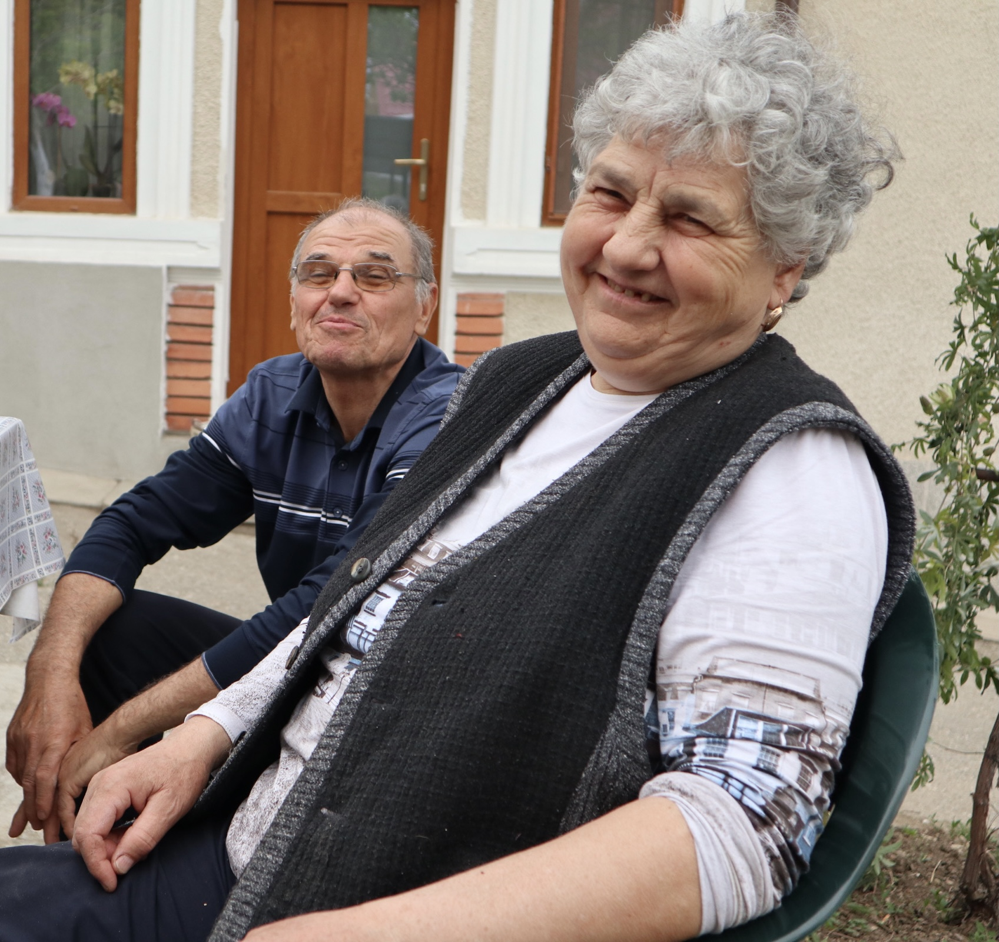
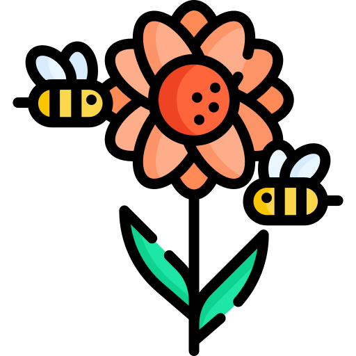
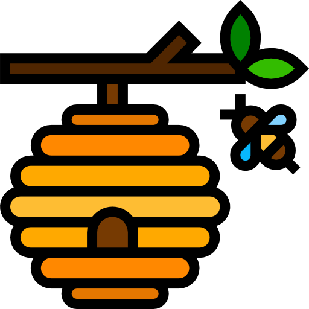
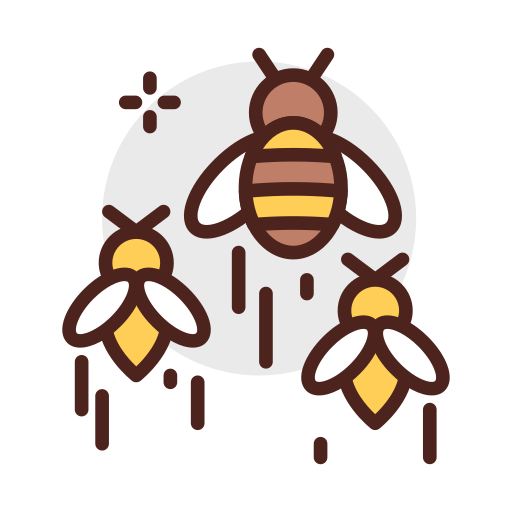
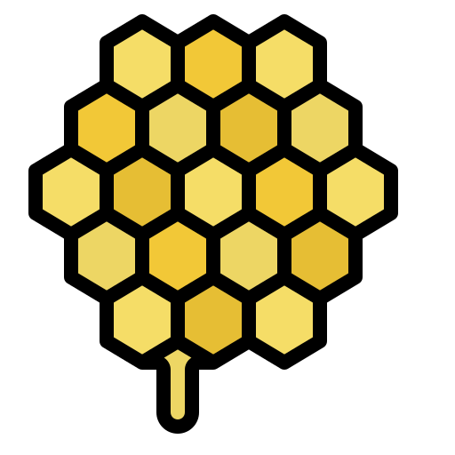
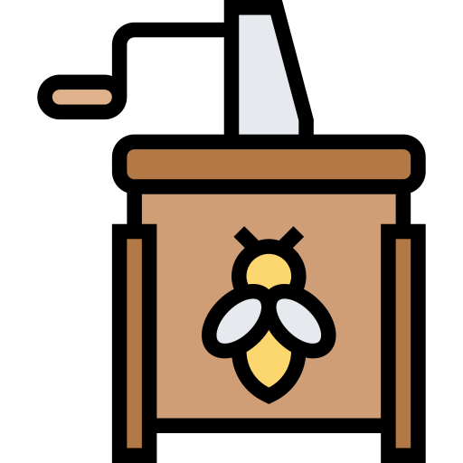
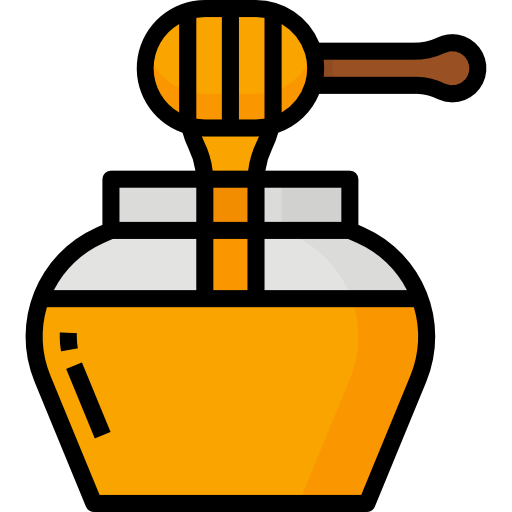
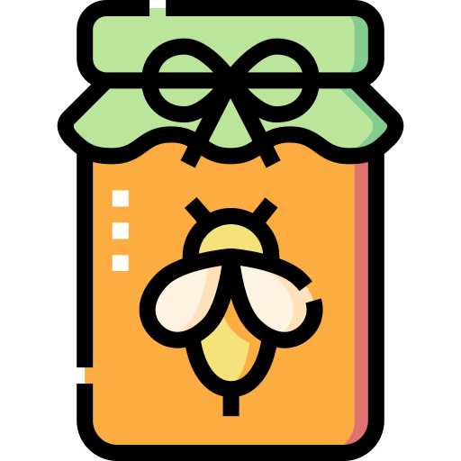

MATCA este o afacere de familie înființată în anul 1992 în satul Priseaca din județul Olt.
Noi suntem Maria și Ion și de aproape 30 de ani oferim clienților noștri miere de cea mai bună calitate. Pasiunea pentru albine am dobândit-o de la tatăl meu care m-a inițiat în
tainele apiculturii de pe vremea când eram copil, iar impreună cu soția mea, ne-am hotărât să transformăm această pasiune într-un stil de viata.
Te invităm să încerci sortimentele noastre de miere de albine produse cu atenție special pentru tine. Misiunea noastră este de a pune pe mesele românilor miere naturală oltenească direct din stupina.
Viziunea firmei este de consolida continuu poziția firmei ca fiind recunoscută pentru calitatea superioară a mierii de albine.

1
Primăvara, când pomii înfloresc, stupii sunt plasați din Priseaca în diferite zone din județele Dolj, Argeș și Olt pentru ca albinele lucrătoare să culeagă nectar.

2
Albinele transportă nectarul la stupi și îl așază în celulele goale ale fagurelui făcut din ceară de albine.

3
Albinele tinere mută nectarul din celulă în celulă pentru a evapora apa din compoziția nectarului.
4
Albinele produc un strat protector de ceară pentru a sigila fagurele, astfel mierea se conservă în mod natural.

5
Fagurii sunt ridicați din stupi și preluați în lădițe speciale pentru a fi pregătiți pentru extragere.

6
Fagurii sunt descapăciți cu grijă și amplasați în extractoare, apoi se realizează extragerea prin centrifugare.

7
Datorită forței centrifuge mierea din celulele fagurilor este extrasă și proiectată pe pereții extractorului, scurgându-se în recipiente specifice.

8
Mierea recoltată este depozitată în maturatoare de inox pentru separarea produsului de impurități, fiind apoi preluată pentru a fi îmbuteliată.
 Livrarea este disponibilă doar în București și Ilfov. Livrarea se face în maxim 48 de ore. Puncte de ridicare comandă în București și Slatina.
Livrarea este disponibilă doar în București și Ilfov. Livrarea se face în maxim 48 de ore. Puncte de ridicare comandă în București și Slatina.